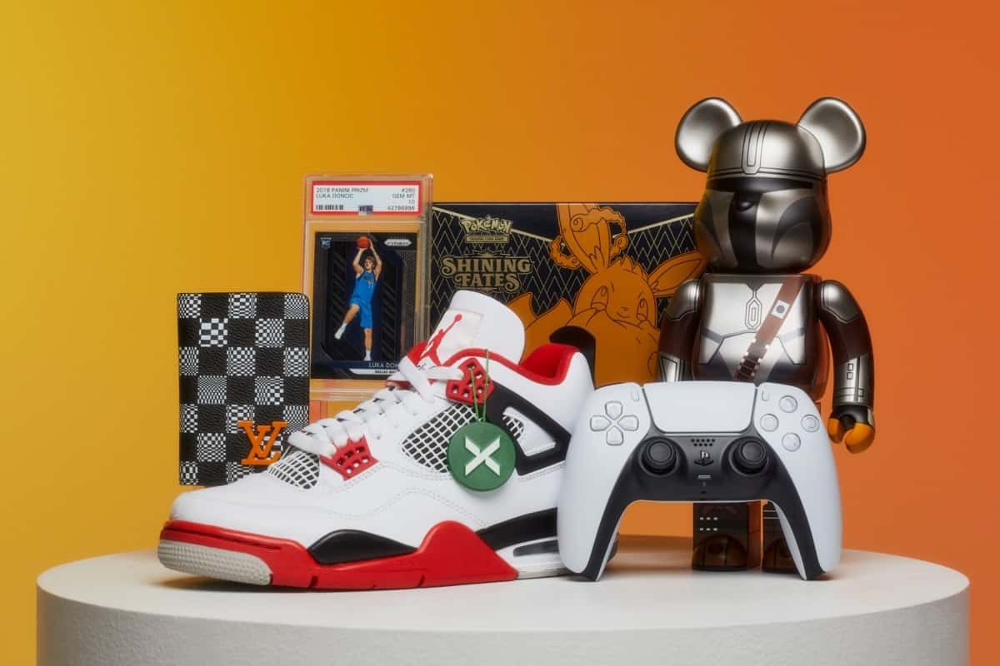
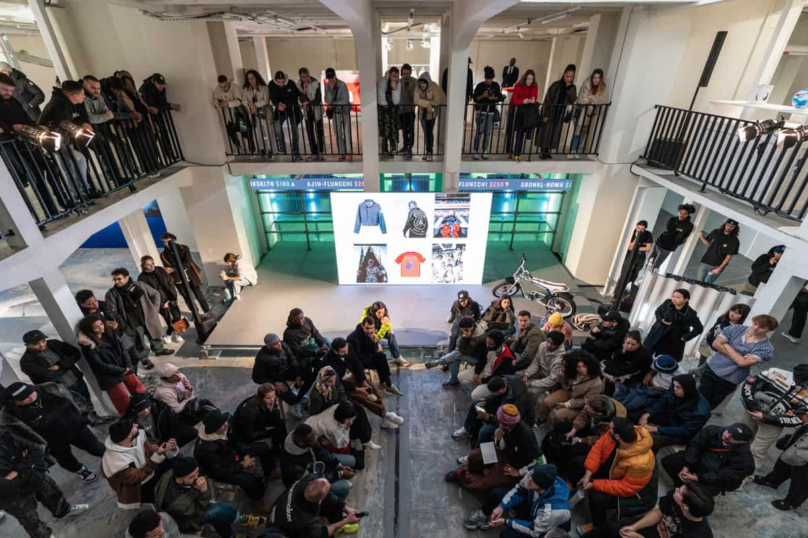

StockX là một thị trường trực tuyến và đại lý quần áo, chủ yếu là giày thể thao. Kể từ tháng 11 năm 2020, nó cũng đã mở cửa cho các sản phẩm điện tử như bảng điều khiển trò chơi, điện thoại thông minh và phần cứng máy tính. Công ty có trụ sở tại Detroit được thành lập bởi Dan Gilbert, Josh Luber, Greg Schwartz và Chris Kaufman vào năm 2015–2016. StockX có hơn 800 nhân viên tại Downtown Detroit. StockX hiện có các văn phòng quốc tế tại London, Vương quốc Anh, tại Eindhoven, Hà Lan và có các cơ sở xác thực tại khu vực lân cận Corktown của Detroit, Moonachie, NJ và Tempe, AZ . Scott Cutlervà Schwartz lần lượt là giám đốc điều hành và giám đốc điều hành, và Deena Bahri trở thành giám đốc tiếp thị đầu tiên của công ty vào năm 2019.
Lịch sử và hoạt động
Công ty khởi nghiệp được thành lập bởi Dan Gilbert , Josh Luber, Greg Schwartz và Chris Kaufman bắt đầu từ năm 2015, và ra mắt vào tháng 2 năm 2016. Luber trước đây đã thành lập trang web tiền thân của StockX về giày thể thao hiếm được gọi là Campless (thành lập trong giai đoạn 2012–2013), và Schwartz giữ chức vụ giám đốc điều hành . Sau khi Gilbert mua lại Campless từ Luber, Luber chuyển từ Philadelphia đến làm việc từ tòa nhà Gilbert's One Campus Martius ở Downtown Detroit . StockX đã mở trụ sở quốc tế đầu tiên tại London vào tháng 10 năm 2018. Scott Cutler được bổ nhiệm làm giám đốc điều hành vào tháng 6 năm 2019. StockX đã hợp tác với nhiều người nổi tiếng và các công ty về các sáng kiến từ thiện. Vào năm 2017, Eminem đã hợp tác với công ty để xổ số giày thể thao Air Jordan của anh ấy được thiết kế với sự cộng tác của Carhartt để gây quỹ cho Quỹ cứu trợ bão Harvey của Quỹ cộng đồng Greater Houston và Nhóm Rubicon để hỗ trợ các nỗ lực cứu trợ ở Texas và Florida sau cơn bão Harvey . Lần ra mắt giày thể thao retro đầu tiên của LeBron James thông qua StockX của Nike Inc. đánh dấu lần đầu tiên thương hiệu bỏ qua bán lẻ và tiến thẳng đến thị trường thứ cấp . Vào năm 2018, StockX và Wu-Tang Clan đã hợp tác trong chiến dịch Quy tắc từ thiện Mọi người xung quanh tôi (CREAM); tiền thu được từ chín sản phẩm độc quyền đã mang lại lợi ích cho Quỹ Wu-Tang để hỗ trợ trẻ em ở các cộng đồng không được phục vụ.
Mô hình kinh doanh
StockX hoạt động như một thị trường trực tuyến , tạo điều kiện thuận lợi cho các cuộc đấu giá giữa
người
bán
và
người mua, sau đó thu phí giao dịch và thanh toán. Người bán gửi các mặt hàng đã mua đến các cơ sở
của
StockX
để kiểm tra và xác minh, sau đó các sản phẩm đã được xác thực sẽ được chuyển đến tay người mua.
StockX
có
khung
định giá biến đổi "giống thị trường chứng khoán " và tiết lộ lịch sử giá cho các mặt hàng cụ thể.
StockX
được biết
đến nhiều nhất với giày thể thao và thời trang dạo phố nhưng cũng mang theo các loại quần áo và phụ
kiện
khác như
túi xách và đồng hồ. StockX đã vượt qua eBay về tổng số giao dịch giày sneaker trong năm 2017. Các
mặt
hàng giả được trả lại cho người bán và người mua được hoàn lại tiền.

